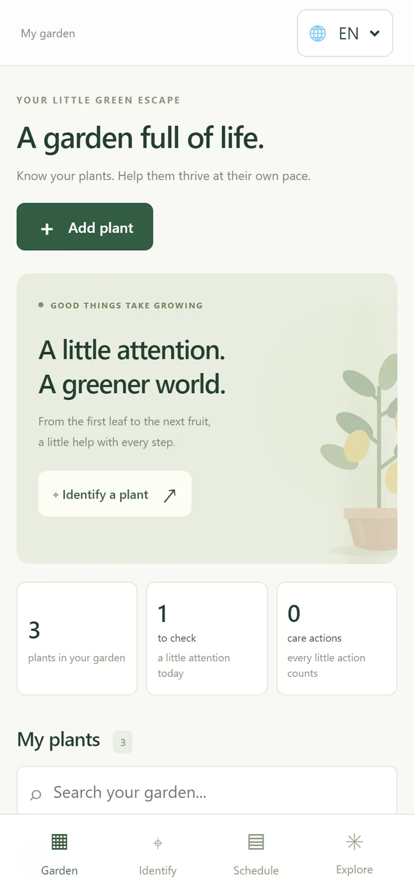
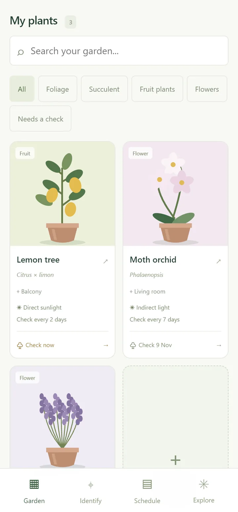
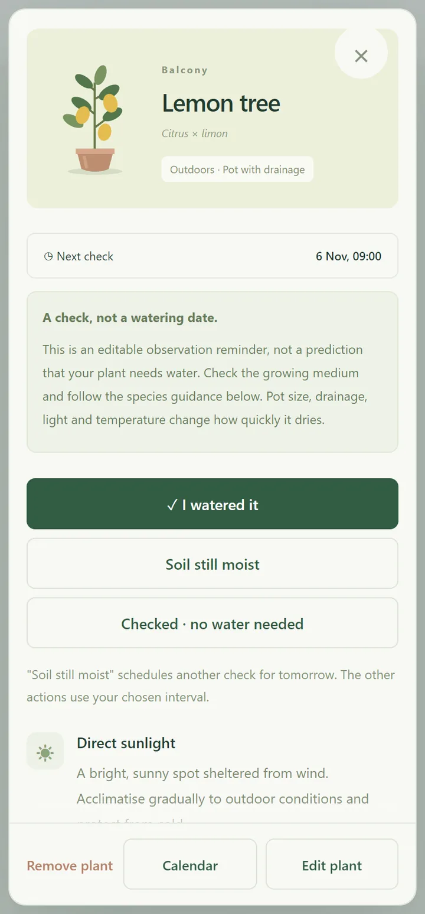
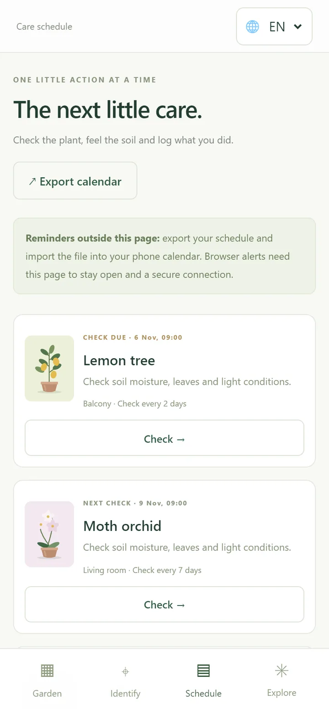
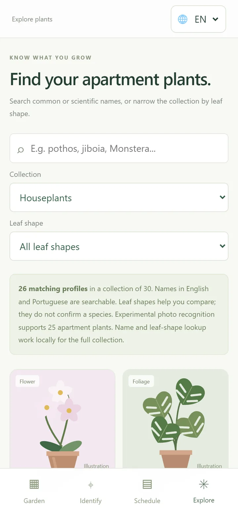
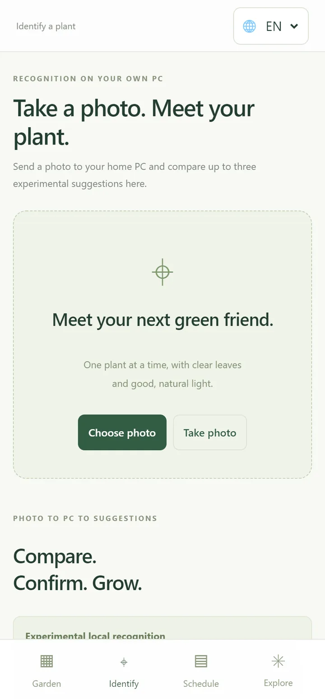

Plant profiles
Explore common plants and review starting points for care.
PLANT CARE · PROTOTYPE
A little help for the plants at home.
Folha is a plant-care prototype designed to help people keep track of their houseplants and learn what they need.
Explore common plants and review starting points for care.
Photo-based suggestions are experimental and need the user to confirm the plant.
The current prototype can share a garden across devices on a home network.
Screenshots
Folha is designed for the phone. The screens below use the app's built-in sample garden.






The current version needs a local server. A public download is not available yet.